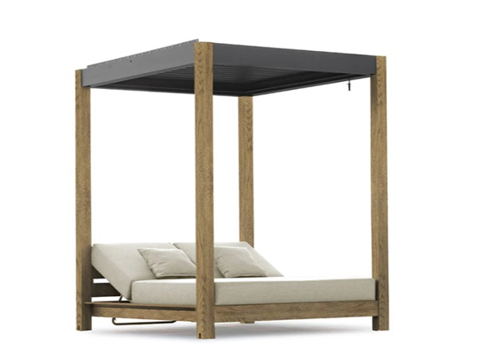
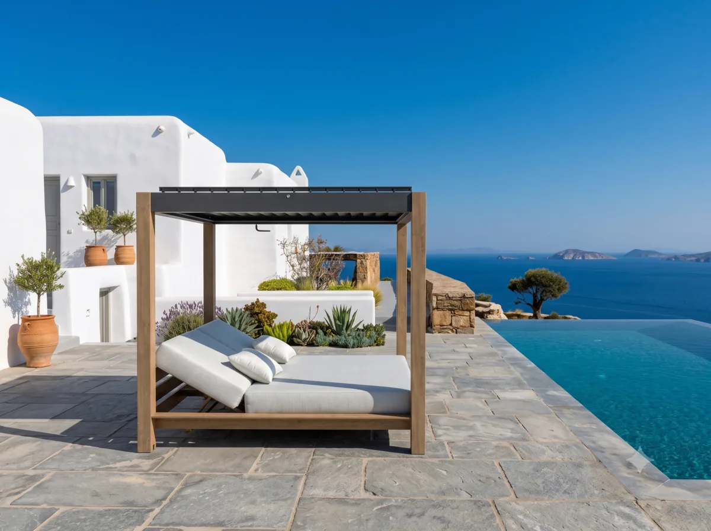
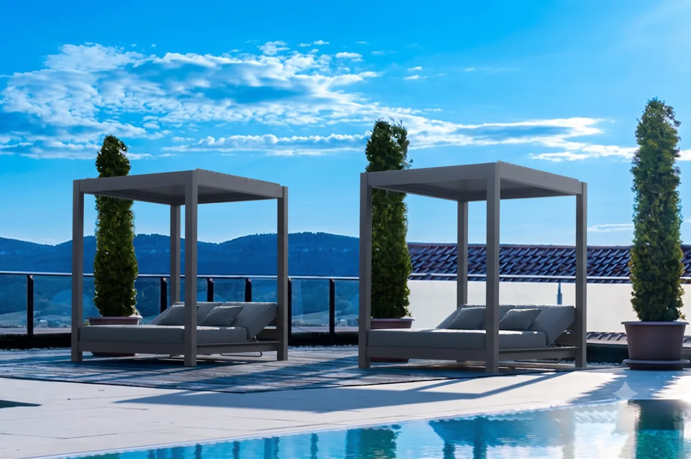

納入規格前請確認
以下商業條件目前不是已公開核實的產品事實，應依實際訂單與交貨地點，在納入規格或下單前確認。
- 目前供應狀況、最低訂購量與專案交期
- 表面處理、網布、編織繩或坐墊顏色及替換選項
- 依現場曝曬條件確認保養與維護需求
- 專案要求的測試、認證、保固與備品支援
- 交貨動線、組裝方式與安裝責任




型號: SWF-91962520
FOUNDATION 系列大型戶外 Cabana 躺床，結合碳灰色鋁合金框架、百葉頂棚與深灰色坐背墊，可作為度假村、飯店及泳池區的獨立休憩配置。
洽詢專案報價本試行頁面的尺寸、所列材質、產地、包裝與圖片，已與 Sunnyward 結構化型錄紀錄及對應本機產品檔交叉核對。價格與尚未核實的商業條件刻意不公開。
以下商業條件目前不是已公開核實的產品事實，應依實際訂單與交貨地點，在納入規格或下單前確認。
提供以下資訊，Sunnyward 才能判斷專案條件，而不只是回覆缺乏前提的單一價格。